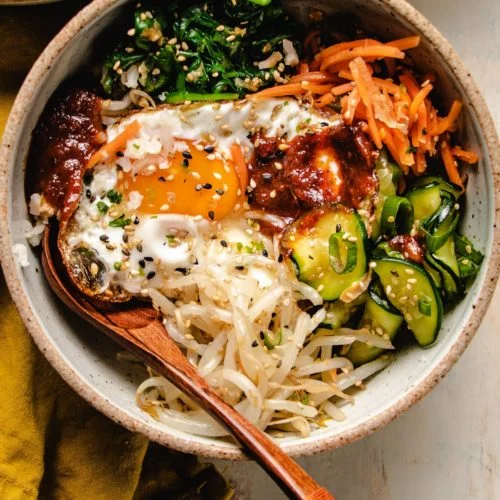

Odin Recipes - Bibimbap

Description
This bibimbap recipe makes a popular and delicious Korean meal.
Meaning mixed rice, bibimbap is a delicious rice bowl topped with vegetables, beef, a whole egg, and gochujang (red chili pepper paste).
A warm Korean rice bowl topped with veggies and meat, it's a filling meal that's always a good idea.
Traditionally, bibimbap was eaten on the eve of the Lunar New Year, to use up any leftovers before the start of the new year.
Ingredients
- Gochujang
- Cucumbers
- Vegetables (spinach and carrots)
- Soy sauce
- Olive oil
- Seasonings (fresh garlic and dried red pepper flakes)
- Steak
- 1 whole egg
- Rice
- Sesame oil
- Sesame seeds (1 teaspoon)
Steps
- Stir the cucumber pieces and gochujang together in a bowl.
- Cook the spinach until bright green and wilted.
- Drain the spinach, squeeze out as much moisture as possible, and set aside.
- Cook the carrots until soft, then stir in the cucumber mixture and red pepper flakes.
- Brown the beef in a different skillet and set aside.
- Fry the eggs until the yolks are runny, but whites are firm.
- Top each serving of rice with the spinach mixture, beef, and the cucumber mixture.
- Place an egg atop each serving, then drizzle with sesame oil, sesame seeds, and gochujang (if desired).